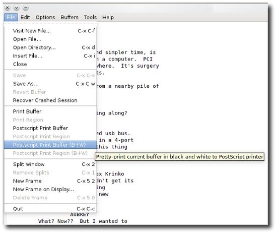

Made on Free Software.


Once you feel you're ready to print your masterpiece on actual tree pulp and have generated a title.page, use this command:
$ screenplay-print ~/myGreatScreenplay
This will attempt to auto-detect the title and author from your title.page (although it does allow for a manual override), indent your script to provide the left margin, number the scenes by occurence of SLUG LINES, add the title.page to the front of the document, and insert form feed characters to enforce page breaks.
Finally, it will ask you to confirm printing via the Line Printing Daemon, lpr. This is the direct-to-printer daemon usually present on a Unix-like system; you may or may not have it configured on your computer.
If you do use lpr and are ready to print, then answer "y" and screenplay-print will send the printable screenplay and the title page to lpr (ie, your default line printer).
Otherwise, you'll be left with a print.screenplay, which you can review and print at your leisure. If you know that you do not have lpr configured, you can add the --no-print option to the command and you will not be asked whether or not you want to send the screenplay to lpr.
The entire screenwriter-mode workflow is plain text, which is powerful, and it is usually easiest to just print straight from the command line in this case. However, that does require you to have some printer set up to be your default line printer.
If you don't have a default lpr printer configured, you can just open print.screenplay in Emacs and use its built-it postscript printing to do the job for you.
If you want to be able to print directly from the command line, you'll need to configure your printing system. The following instructions were written specifically for GNU Linux, BSD, and other Unix and Unix-like systems; it should apply to Mac OS X but be aware that I have not personally tested it on OS X.
First, open up the CUPS admin panel in a web browser. You reach this by opening a web browser to 127.0.0.1:631, and you will be prompted for the root password.
In the ADMINISTRATION tab of the CUPS configuration page, you can MANAGE PRINTERS or add a new one if you haven't used a printer on the system yet. Do that, and set a printer as an lpd:// printer, and set that as your default.
As an example, on Slackware GNU/Linux, I can go to CUPS and add a new printer. I select the production office's Ricoh 1060 printer by way of its IP address, so I enter lpd://192.168.68.10
I choose its driver, which is conveniently already installed (but if it wasn't, I'd go to openprinting.org and find the ppd file).
I would then mark this printer as my default, which means that anything on the command line sent to lpd will, by default, go to that Ricoh 1060 (aka, 192.168.68.10).
Now to test the configuration:
$ echo "test" | lpr
I should get a page reading "test" moments later. Success.
If you want to save your screenplay to a PDF and email it to all your production staff and actors, you can do this a few different ways.
The easiest and most direct method is to download text2pdf, an application written by Phil Smith, which takes plain text and creates a PDF from it, retaining all formatting. You may download text2pdf from eprg.org/pdfcorner/text2pdf
There is both the source code and a GNU MakeFile available for it. To compile it, simply download both, place into a consolidated folder, and run make. You can then move text2pdf to either ~/bin or a systemwide bin directory.
$ cd text2pdf
$ make
mv text2pdf ~/bin
Once installed, you can use it:
$ text2pdf print.screenplay > myGreatScreenplay.pdf
Which produces, obviously, myGreatScreenplay.pdf that will be viewable in any PDF viewer on most popular operating systems.
If, on the other hand, you prefer or want to use CUPS as a pdf "printer", then you can download the cups-pdf ppd from physik.uni-wuerzburg.de/~vrbehr/cups-pdf
This is by far a more complex configuration, as you must install the program, create a printer backend for it, and then print to that. A good overview of it can be found here at alien.slackbook.org/dokuwiki/doku.php?id=slackware:cups
You're now ready to read up on the next tool, screenplay-location